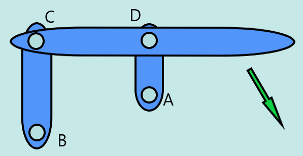

Project Automata
Project
Dit project werd gerealiseerd door Nick Driesen en Danthé Verstappen, de opgave was om een automata project neer te zetten. Dit houdt in dat we 1 simpele beweging moesten omzetten tot een heus project. Tijdens het project werdt gebruik gemaakt van Pinterest, 507 mechanical movements etc. voor inspiratie en uitleg.
Criteria
Voor dit project werdt er rekening gehouden met volgende criteria.
- Vertrekkend één rotatie beweging
- Manueel bediend
- Volledig uitgetekend in solidworks
- Passend in locker
Deelproblemen
Ons project was ingedeeld in de 2 onderstaande bewegingen, deze hebben wij individueel aangepakt
Zeilbeweging
Om het zeil op en neer te laten gaan maken we gebruik van een pully length extender, een block & tackle om specifieker te zijn.

Dit zorgde ervoor dat ons zeil dubbel zo ver wordt opgehaald, en dus de diameter van onze schijf in 2 deelt.
Roeibeweging
gewoon test text oqdn obqdiu oqniof qobqni zfqon dzqo indqzoinf qoi bnfoib fiubes goiqzhoizqfn oiznoqifj fuoebqzoibn dqou nzqd
oqzindqozi dqzipojdq oinjfei oqjizdn fqoizjd